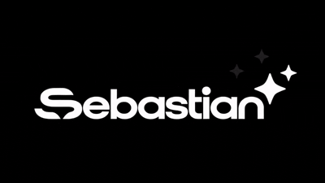

Chinese reading assistant
Select text to hear just that passage.
Paste an image or drag it here
PNG, JPG, WebP, GIF or BMP · up to 20 MB
Flowing text joins wrapped lines and keeps blank-line paragraphs. Check the text and paragraph breaks before inserting.
Images are processed on your device. Chinese recognition files download on first use.